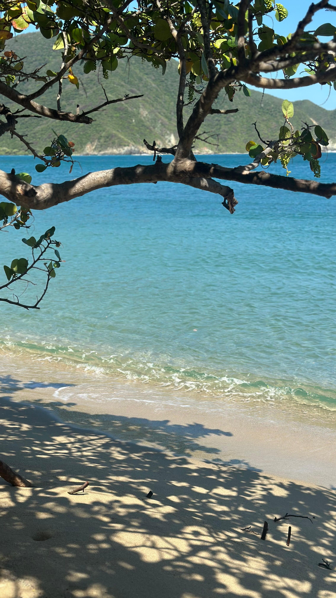
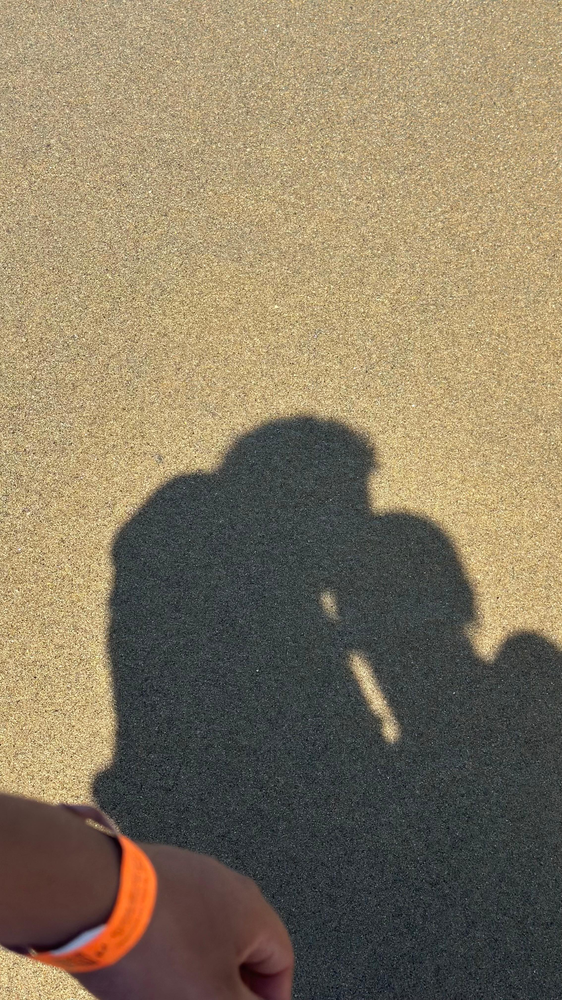
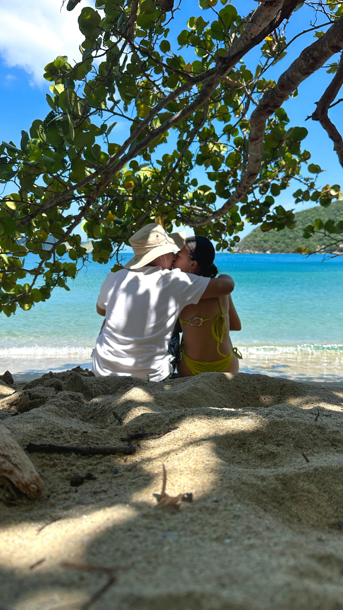
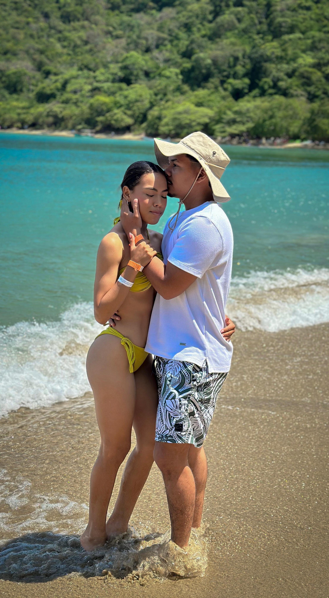

"Todo viaje tiene un comienzo, y nuestro comienzo fue muy especial. El destino nos puso en el mismo lugar, al mismo tiempo y me hizo mirar tu nombre; en ese momento tenía las ganas de un viaje pero no sabía que el viaje sería tan hermoso.
Charles Schulz dijo: 'En realidad, no importa a dónde vas, sino a quién tienes a tu lado', y yo tengo a mi lado a la mejor compañía: Tú."
"El camino a veces de lejos se ve fácil, pero cuando lo ves con detenimiento, te encuentras con que hasta lo más hermoso tiene su parte peligrosa. Nuestro camino no ha sido fácil aunque sí hermoso, hemos sido golpeados seguido, a veces sin habernos levantado del todo, pero miro mi mano y tú me sostienes. Las cosas bonitas no se consiguen fácil, y sé que ni 7 olas juntas nos pueden derrumbar.
'No hay belleza sin algo de extrañeza en sus proporciones, ni gran amor que no haya sobrevivido a una tormenta.' — Sir Francis Bacon."

"Todo gran amor sobrevive a una tormenta, y la tormenta ha sido fuerte. En algunos momentos tuvimos miedo de que el barco se volteara, pero nos dimos apoyo todo el tiempo y eso nos hizo superar la tormenta. Después hubo una recompensa: la paz y la tranquilidad que siento cuando estoy a tu lado, es la paz que sientes al ver un mar tranquilo, una arena limpia y unos colores brillantes.
Ahora te veo con transparencia, y ahora podemos disfrutar de la paz juntos, disfrutando de la calma de tu cuerpo, entrando en ti sin temor a nada y disfrutando de un amor como el que merecemos."

"No sé cuántos granos de arena se necesiten, pero pondré todos los necesarios para construir un futuro contigo, brillante como el sol y hermoso como tú. Estaré contigo incluso en las sombras, y tus ojos hermosos me darán el aliento que necesito. Tus besos me hacen sumergirme en tus aguas y tu cuerpo me hace sentir el rey del mundo, quiero que ese paraíso sea solo para mí.
No quiero un paraíso si tú no estás en él, porque contigo, cualquier desierto se vuelve un jardín."
"Nuestro viaje siempre tendrá cambios y a veces pasamos de la calma a algo más movido pero igual de hermoso. Junto a un paisaje cristalino, decidimos unir nuestros caminos, y el agua no era lo único transparente ese día; mis sentimientos por ti también lo eran.
No tenía grandes lujos que ofrecerte, solo un pequeño caracol que guardaba todo el sonido del mar y toda mi intención de cuidarte. Ese caracol fue mi promesa. Al pedírtelo oficialmente, el viaje cambió para siempre: dejamos de ser dos viajeros compartiendo una moto para ser uno solo compartiendo un destino. Gracias por valorar lo esencial y por decir que sí en el lugar más claro del mundo."

"Y aquí, bajo la sombra de la vida que vamos construyendo, encontramos nuestro refugio. Un refugio que no es un lugar físico, sino nosotros mismos. Este primer mes ha sido la ruta más intensa de mi vida. Hemos pasado por tanto, pero al final siempre podemos sentarnos, mirarnos a los ojos y darnos un beso lleno de amor. Quiero que me veas y sepas que puedes descansar a mi lado, eres la persona con la que quiero compartir mi vida.
La forma en la que te quiero no es algo que se pueda describir con palabras, por eso trato de explicártelo con besos y caricias.
'El amor es paciente, es bondadoso. El amor no es envidioso ni jactancioso ni orgulloso. No se comporta con rudeza, no es egoísta, no se enoja fácilmente, no guarda rencor. Todo lo disculpa, todo lo cree, todo lo espera, todo lo soporta. El amor jamás deja de ser.' — 1 Corintios 13:4-8."

"Llegamos al final de este recorrido, pero es apenas el inicio de nuestra historia. Si el viaje hasta aquí fue increíble, no puedo imaginar lo que nos espera. En tus ojos encontré mi norte y en tus brazos mi puerto seguro.
Este beso es mi promesa de que, sin importar qué tan fuerte sople el viento o qué tan alto suba la marea, siempre estaré aquí para sostenerte. Gracias por ser mi compañera de ruta, mi apoyo en la tormenta y mi paz en la calma.
Este es un viaje solo de ida, porque no quiero que nunca se acabe. Te amo hoy más que el primer día."
Feliz Primer Mes
Que este sea solo el primero de todos los meses de nuestras vidas.
Te amo muchísimo, mi Reina.